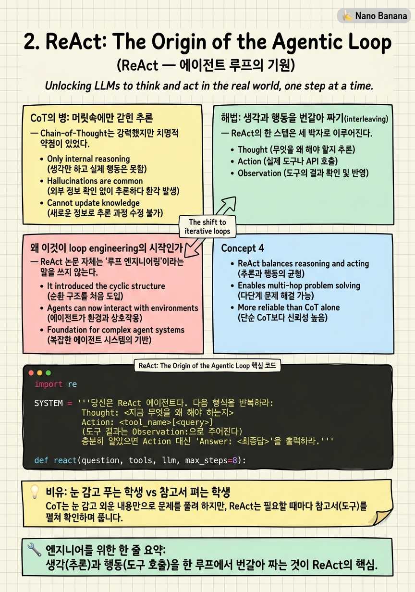

ReAct: The Origin of the Agentic Loop

🎯 학습 목표
- ReAct의 Thought→Action→Observation 루프를 정확히 설명하고 직접 구현할 수 있다
- 순수 Chain-of-Thought가 왜 환각과 오류 전파에 취약한지, ReAct가 이를 어떻게 막는지 안다
- '추론을 외부 도구에 그라운딩한다'는 말의 의미를 이해한다
- ReAct가 왜 loop engineering의 출발점으로 불리는지 설명한다
- ReAct 루프의 실패 모드(무한 반복, 잘못된 관찰 신뢰)를 진단할 수 있다
2022년 10월, Yao 등이 발표한 ReAct: Synergizing Reasoning and Acting in Language Models(ICLR 2023)는 오늘날 우리가 '에이전트'라고 부르는 거의 모든 것의 씨앗이다. 제목 그대로 Reason(추론) + Act(행동) 의 합성어다.
그 전까지 LLM의 추론은 Chain-of-Thought(CoT), 즉 '머릿속으로 단계별로 생각하기'가 전부였다. 문제는 이 생각이 순전히 모델 머릿속에서만 일어난다는 것이다. 중간에 사실이 틀리면 그 오류가 눈덩이처럼 다음 단계로 굴러간다(오류 전파). 세상과 대조할 방법이 없으니 그럴싸한 거짓말(환각)을 지어내도 스스로 못 잡는다.
ReAct의 통찰은 단순하면서 결정적이다. 생각만 하지 말고, 생각 사이사이에 실제 행동을 끼워 넣어 세상과 대조하라. 위키피디아를 검색하고(Action), 그 결과를 읽고(Observation), 그걸 바탕으로 다시 생각한다(Thought). 이 Thought→Action→Observation의 반복이 바로 1장에서 본 while 루프의 원형이다. 이 장에서 우리는 에이전트 루프의 DNA를 해부한다.
핵심 내용
CoT의 병: 머릿속에만 갇힌 추론
Chain-of-Thought는 강력했지만 치명적 약점이 있었다. 추론의 모든 단계가 모델 파라미터라는 닫힌 세계 안에서만 벌어진다는 것이다.
여기서 두 가지 병이 생긴다. 환각(hallucination) — 모델이 모르는 사실을 그럴싸하게 지어낸다. 오류 전파(error propagation) — 중간 한 단계가 틀리면, 이후 모든 추론이 그 틀린 전제 위에 쌓여 통째로 무너진다.
"ReAct overcomes issues of hallucination and error propagation prevalent in chain-of-thought reasoning by interacting with a simple Wikipedia API." — Yao et al., 2022
핵심 진단은 이렇다. CoT에는 현실과 대조하는 순간(reality check) 이 없다. 시험지에 계산 과정을 적되, 계산기를 한 번도 안 두드리고, 참고서를 한 번도 안 펼치는 학생과 같다. ReAct는 바로 이 '대조하는 순간'을 추론 루프 안에 심는다.
해법: 생각과 행동을 번갈아 짜기(interleaving)
ReAct의 한 스텝은 세 박자로 이루어진다.
- Thought — 지금 상황에서 무엇을 해야 하는지 언어로 추론한다. ("파리의 인구를 알아야겠다")
- Action — 그 추론에 따라 외부 도구를 호출한다. (
Search["Paris population"]) - Observation — 도구가 돌려준 실제 결과를 받는다. ("약 210만 명")
그리고 이 관찰을 컨텍스트에 넣은 채 다시 Thought로 돌아간다. 논문의 표현을 빌리면:
"reasoning traces help the model induce, track, and update action plans as well as handle exceptions, while actions allow it to interface with external sources."
즉 추론과 행동이 서로를 돕는 시너지 구조다. 추론은 다음에 무슨 행동을 할지 계획을 세우고 예외를 처리하며, 행동은 그 추론을 실제 세계(위키피디아, 계산기, 코드 실행)에 붙들어 맨다. 이 '붙들어 맴'을 그라운딩(grounding) 이라 부른다 — 추론이 허공에 떠 있지 않고 관찰된 사실에 닻을 내린 상태다.
왜 이것이 loop engineering의 시작인가
ReAct 논문 자체는 '루프 엔지니어링'이라는 말을 쓰지 않는다. 하지만 후대가 이걸 출발점으로 삼는 이유가 있다.
ReAct는 에이전트를 정적인 프롬프트 한 방이 아니라 동적인 반복 과정으로 재정의했다. 답이 나올 때까지 Thought→Action→Observation을 계속 도는 것 — 이게 바로 1장의 for step in range(max_steps) 루프다. 오늘날 Claude Code가 파일을 읽고·수정하고·테스트를 돌리는 것도, Cursor가 코드베이스를 탐색하는 것도, 전부 이 루프의 후손이다.
중요한 건 ReAct가 열어젖힌 질문들이다. 루프를 언제 멈출까? 관찰이 너무 길면 어떻게 자를까? 같은 행동을 반복하면 어떻게 감지할까? 도구가 에러를 뱉으면? 이 질문들에 답하는 것이 곧 loop engineering이고, 3장부터의 모든 논문이 이 질문들 중 하나씩을 붙들고 발전시킨 결과물이다. ReAct는 '에이전트는 루프다'라는 명제를 최초로 실증했다.
💡 비유로 이해하기
순수 CoT는 눈을 감고 암산으로만 시험을 푸는 학생이다. 머릿속으로 '음, 이 나라 수도는 아마 이거고, 인구는 대략 저 정도일 거야' 하고 쭉 밀고 나간다. 똑똑하면 꽤 맞히지만, 한 번 잘못 기억하면 그 위에 쌓은 모든 답이 연쇄적으로 틀린다. 그리고 자기가 틀렸는지조차 모른다.
ReAct는 매 단계 참고서를 펼치고 계산기를 두드리는 학생이다. '수도가 뭐였지?' 싶으면 바로 찾아보고(Action), 찾은 값을 확인하고(Observation), 그제서야 다음 계산으로 넘어간다. 한 단계 한 단계가 현실에 검증받으니, 틀린 전제 위에 탑을 쌓는 일이 없다.
결정적 차이는 '생각의 속도'가 아니라 '대조의 유무'다. 두 학생 다 똑똑할 수 있다. 하지만 시험이 어려워지고 길어질수록, 매번 사실을 확인하며 나아가는 학생이 압도적으로 안정적이다. 에이전트 작업이 복잡할수록 ReAct 루프가 CoT를 이기는 이유가 정확히 이것이다.
💻 코드 예시
ReAct 루프를 직접 구현해보자. 1장의 골격과 거의 같지만, 이번엔 LLM이 명시적으로 'Thought:'와 'Action:'을 텍스트로 뱉게 하고, 우리가 그걸 파싱해 도구를 실행한 뒤 'Observation:'을 되먹인다. 이 텍스트 프로토콜이 원조 ReAct의 방식이다(요즘은 tool-calling API가 이걸 구조화해준다).
import re
SYSTEM = '''당신은 ReAct 에이전트다. 다음 형식을 반복하라:
Thought: <지금 무엇을 왜 해야 하는지>
Action: <tool_name>[<query>]
(도구 결과는 Observation:으로 주어진다)
충분히 알았으면 Action 대신 'Answer: <최종답>'을 출력하라.'''
def react(question, tools, llm, max_steps=8):
scratchpad = f"Question: {question}\n"
for _ in range(max_steps):
out = llm(SYSTEM + scratchpad, stop=["Observation:"]) # 관찰 전까지만 생성
scratchpad += out
if "Answer:" in out: # 정지 조건
return out.split("Answer:")[-1].strip()
m = re.search(r"Action:\s*(\w+)\[(.*?)\]", out) # Action 파싱
if not m:
scratchpad += "\nObservation: (형식 오류 — Action을 다시 출력하라)\n"
continue
tool, arg = m.group(1), m.group(2)
obs = tools.get(tool, lambda a: f"알 수 없는 도구 {tool}")(arg) # act
scratchpad += f"\nObservation: {obs}\n" # observe → 다음 루프
return "(max_steps 도달)"
주목할 지점 셋. (1) stop=["Observation:"] — 모델이 스스로 관찰 결과까지 지어내지 못하게 생성을 끊는다. 관찰은 반드시 실제 도구에서 와야 그라운딩이 성립한다. 이걸 빠뜨리면 모델이 도구 결과를 환각하는 고전적 버그가 난다. (2) scratchpad — Thought·Action·Observation이 계속 누적되는 이 문자열이 곧 에이전트의 '작업 기억'이다. 길어지면 잘라야 하는데, 그게 7장 컨텍스트 엔지니어링의 문제로 이어진다. (3) 형식 오류 처리 — 파싱 실패 시 무너지지 않고 재시도를 유도한다. 이런 방어 코드가 loop engineering의 실전 기본기다. 이 30줄이 ReAct의 전부이며, 현대 tool-calling 에이전트는 이 텍스트 프로토콜을 JSON 스키마로 정형화한 것뿐이다.
🏭 현업에서의 평가
✅ 시니어가 보는 것
- Thought/Action/Observation 각각의 역할과, 셋이 왜 함께 있어야 시너지가 나는지 설명
- 그라운딩(추론을 관찰에 닻 내림)이 환각·오류전파를 어떻게 막는지 인과적으로 설명
- 현대 tool-calling API가 결국 ReAct의 구조화된 버전임을 알아봄
- 무한 반복·관찰 폭주·형식 오류 같은 실전 실패 모드에 대한 대비책
⚠️ 레드 플래그
- ReAct를 그냥 '프롬프트 기법'으로만 이해하고 루프 구조를 못 봄
- 관찰 결과를 모델이 지어내게 놔두는 stop-sequence 누락 버그를 모름
- 정지 조건 없이 '답 나올 때까지' 돌리겠다고 함
- CoT와의 차이를 '더 똑똑해서'로 설명 (그라운딩의 부재/존재를 못 짚음)
🎤 예상 인터뷰 질문
- ReAct와 순수 Chain-of-Thought의 근본적 차이는 무엇이며, 어떤 작업에서 그 차이가 결정적인가?
- ReAct 루프가 같은 행동을 무한 반복하는 상황을 어떻게 감지하고 끊겠는가?
- 현대 함수 호출(function calling) API는 원조 ReAct와 무엇이 같고 무엇이 다른가?
✨ 핵심 요약
Reason + Act
생각(추론)과 행동(도구 호출)을 한 루프에서 번갈아 짜는 것이 ReAct의 핵심.
그라운딩
추론을 외부 관찰에 닻 내려, CoT의 환각과 오류 전파를 끊는다.
루프의 원형
Thought→Action→Observation 반복이 오늘날 모든 에이전트 while 루프의 조상이다.
stop sequence의 중요성
관찰까지 모델이 생성하지 못하게 끊어야 그라운딩이 진짜로 성립한다.
scratchpad = 작업 기억
누적되는 Thought/Action/Observation이 에이전트의 단기 기억이며, 길이 관리가 곧 컨텍스트 문제로 이어진다.
현대 API의 조상
tool-calling / function calling은 ReAct의 텍스트 프로토콜을 JSON으로 정형화한 버전이다.
새 질문의 문을 엶
정지 조건·반복 감지·관찰 관리 등 loop engineering의 의제 전부가 여기서 시작됐다.